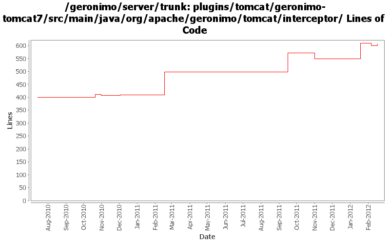

[root]/plugins/tomcat/geronimo-tomcat7/src/main/java/org/apache/geronimo/tomcat/interceptor

| Author | Changes | Lines of Code | Lines per Change |
|---|---|---|---|
| Totals | 27 (100.0%) | 299 (100.0%) | 11.0 |
| xuhaihong | 16 (59.3%) | 219 (73.2%) | 13.6 |
| genspring | 1 (3.7%) | 61 (20.4%) | 61.0 |
| djencks | 5 (18.5%) | 15 (5.0%) | 3.0 |
| dblevins | 1 (3.7%) | 4 (1.3%) | 4.0 |
| kevan | 2 (7.4%) | 0 (0.0%) | 0.0 |
| ashishjain | 2 (7.4%) | 0 (0.0%) | 0.0 |
Only invoke the request listener while entering the application and only invoking the listener if the forwarding tag is set
6 lines of code changed in 1 file:
Only invoke listeners for the real client requests
3 lines of code changed in 1 file:
GERONIMO-6266 The jndi prefix URL could not work before the web application is totally started
8 lines of code changed in 1 file:
GERONIMO-6264 Can't access geronimo Java:com jndi tree from javax.servlet.ServletRequestListener.requestInitialized(ServletRequestEvent) - a workaround
61 lines of code changed in 1 file:
GERONIMO-6204 Decouple OpenWebBeans from web container
5 lines of code changed in 2 files:
GERONIMO-6145 Factory info should not be shared among those web jsf applications in one EAR package
74 lines of code changed in 1 file:
GERONIMO-5050 Start of always using openejb for owb
1 lines of code changed in 1 file:
GERONIMO-5821 Make sure cleanup action is taken if any RuntimeException is thrown in the invocation chain
123 lines of code changed in 10 files:
Related changes for OWB-503: Reduce static synchronized hashmap usage
For Geronimo this means mostly not passing around a HashMap as context, but instead the new WebBeansContext object
4 lines of code changed in 1 file:
GERONIMO-5050 provide a means of sharing the openejb-initialized owb context with web containers. Use it for tomcat
2 lines of code changed in 1 file:
GERONIMO-5050 mostly a thread/module based singleton scheme for OWB, and a bunch of other tweaks
12 lines of code changed in 3 files:
GERONIMO-5189 merge from branches/2.2
0 lines of code changed in 2 files:
GERONIMO-5305 Patch to disable MCast receiver service. Thanks for the patch Amit Puri.
0 lines of code changed in 2 files: